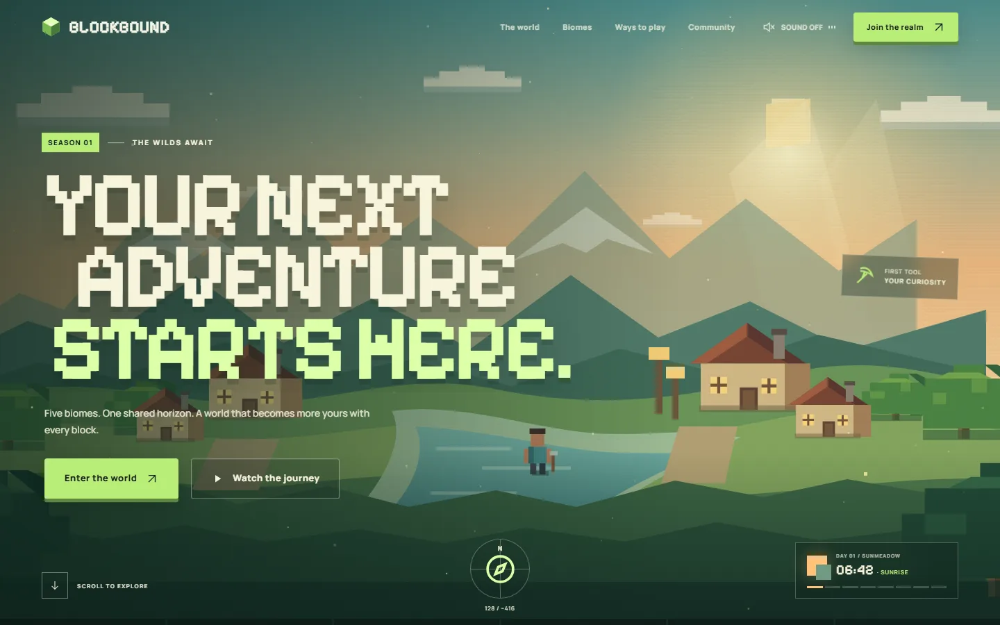
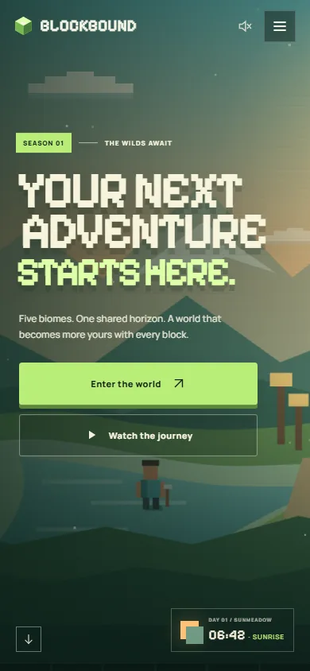

LIVE DEMO 001BLOCKBOUND
A cinematic voxel-world journey from sunrise meadows to a glowing Stronghold. Five biomes, a living soundscape, and a story told through scroll.
97 Lighthouse performance100 Accessibility5 Distinct biomes
